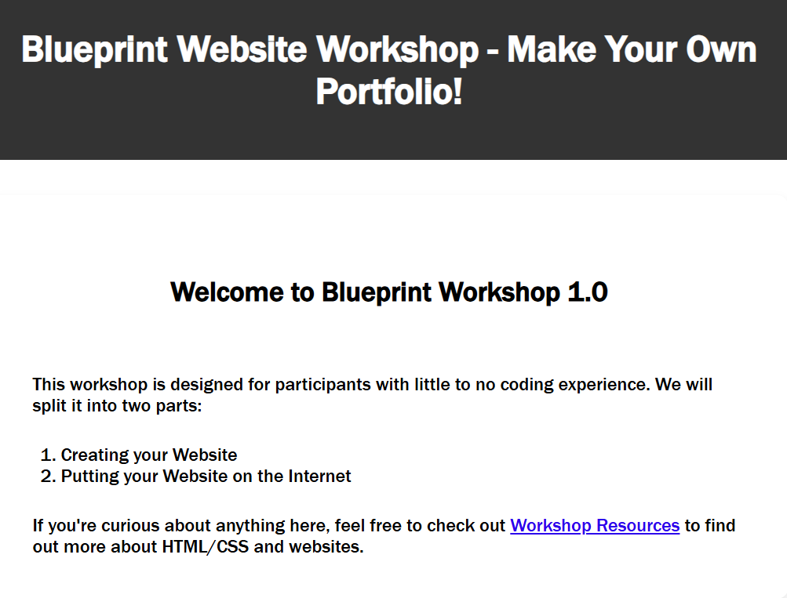

Interests & Extracurriculars
Outside of class, I have been most drawn to communities and projects that combine technical work with leadership, collaboration, and real-world impact. These experiences have helped shape how I approach both learning and building.
Blueprint Boulder
Blueprint Boulder was one of my favorite ways to use technical skills in a practical setting. I enjoyed being part of a team that built software for nonprofits, because the work had a meaningful and measurable impact. It pushed me to think more carefully about the kinds of tools I was building and how they could genuinely help the people they were meant to serve.
Data Buffs
Data Buffs gave me the opportunity to combine technical curiosity with leadership. As president, I enjoyed helping create a space where students could learn about data science in a hands-on and approachable way. More than anything, I liked being part of a community that encouraged people to ask questions, build confidence, and explore how data science can be relevant across many different fields.

Teaching & Workshops
One thing I have found especially rewarding is helping other students feel more comfortable with technology. Teaching others has made me a better communicator and a more thoughtful builder because I have to prioritize what's actually important for a beginner. I learned that you're only communicating with someone else when you both understand what's going on. Otherwise, you're just talking to them.